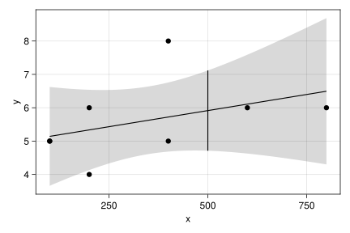
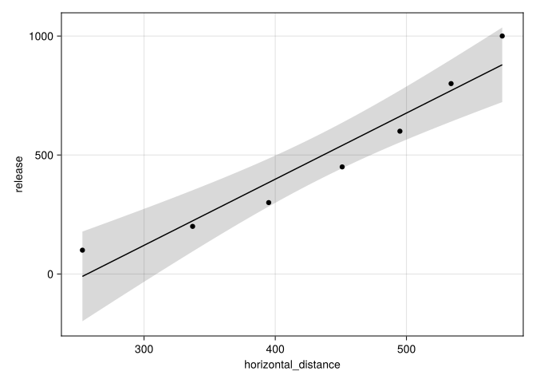
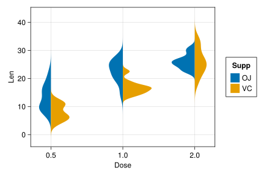

using StatsBase, Distributions, GLM, HypothesisTests
using CSV, DataFrames, CategoricalArrays, RDatasets
using CairoMakie, AlgebraOfGraphics
using LinearAlgebra9 The linear regression model
We discuss the linear regression model in the following using linear algebra to quickly formulate the main results. For those unfamiliar with linear algebra, its use is only to illustrate various aspects that have pre-defined methods in GLM; no user-level linear algebra is necessary for computation.
For this, we utilize the following packages:
9.1 Multiple linear regression
The simple linear regression model related a covariate variable, \(x\), to a response variable \(Y\) through a formulation:
\[ Y_i = \beta_0 + \beta_1 \cdot x_i + e_i, \]
where \(\beta_0, \beta_1\) are the parameters for the model that describe the average value of the \(Y\) variable for a given \(x\) value and the random errors, \(e_i\), are assumed to be described to be a random sample from some distribution, usually \(Normal(0, \sigma)\). Some inferential results require this sample to be iid.
The model for multiple regression is similar, though there are \(k = 0, 1\), or more covariates accounted for in the notation:
\[ Y_i = \beta_0 + \beta_1 \cdot x_{1i} + \beta_2 \cdot x_{2i} + \cdots + \beta_k \cdot x_{ki} + e_i. \]
Following (Wackerly et al. 2008) we formulate the regression model using matrix algebra and quickly review their main results.
If there are \(n\) groups of data, then the main model matrix is the \(n\times (k+1)\) matrix:1
\[ X = \begin{bmatrix} 1 & x_{11} & x_{12} & \cdots & x_{1k}\\ 1 & x_{21} & x_{22} & \cdots & x_{2k}\\ \vdots & \vdots & \vdots & \vdots & \vdots \\ 1 & x_{n1} & x_{n2} & \cdots & x_{nk} \end{bmatrix}. \]
The response, parameters, and errors are recorded in column vectors:
\[ Y = [y_1, y_2, \cdots, y_n], \quad \beta = [\beta_0, \beta_1, \dots, \beta_k], \quad e= [e_1, e_2, \dots, e_n]. \]
The collection of equations can then be written as \(Y = X\beta + e\).2
The notation \(\hat{Y} = X\beta\) is common, as the values \(X\beta\) are used to predict the average values of the response. The least squares problem to estimate the parameters is then to find \(\beta\) that minimizes:
\[ \lVert Y - \hat{Y} \rVert^2 = \lVert Y - X\beta \rVert^2. \]
Using calculus, it can be seen that any minimizer, \(\hat{\beta}\), will satisfy \(X'X\hat{\beta}=X'Y\), with \(X'\) denoting the transpose3. When written out these are called the normal equations, which, when the matrix \(X\) is non-degenerate (rank \(k+1\) in this case) can be solved algebraically by
\[ \hat{\beta} = (X'X)^{-1}X' Y. \]
We now assume the errors are an iid random sample from a distribution with mean \(0\) and variance \(\sigma^2\). The matrix of covariances, \(COV(\beta_i, \beta_j)\), is called the covariance matrix and denoted \(\Sigma_{\hat{\beta}\hat{\beta}}\). Under these assumptions, it can be shown to satisfy:
\[ \Sigma_{\hat{\beta}\hat{\beta}} = \sigma^2 (X'X)^{-1}. \]
The parameter \(\sigma^2\) can be estimated. We have the residuals are given in vector form by \(\hat{e} = Y - \hat{Y}\). Here \(\hat{Y} = \hat{H}Y\). The product \(\hat{H} = X(X'X)^{-1}X'\) is called the “hat” matrix and comes from \(\hat{Y} = X\hat{\beta} = X((X'X)^{-1}X'Y) = (X(X'X)^{-1}X')Y\).
The hat matrix has the property of a projection matrix taking values in an \(n\) dimensional space and projecting onto a subspace described by the columns of the \(X\) matrix. This allows a geometric interpretation of the least-squares formulation.4
The sum of squared residuals is:
\[ \sum (Y_i - \hat{Y_i})^2 = \lVert Y - \hat{Y} \rVert^2 = \lVert (1-\hat{H})Y\rVert^2 = Y'(I-\hat{H})Y, \]
where \(I\) is the diagonal matrix of all ones that acts like an identity under multiplication.
The expected value can be computed to get \(E(\lVert Y - \hat{Y} \rVert^2) = (n - 1 - k)\sigma^2\), which is used to estimate \(\sigma^2\):
\[ s^2 = \frac{\lVert Y - \hat{Y} \rVert^2}{n-1-k} = \frac{\sum (Y_i - \hat{Y_i})^2}{n-1-k}. \]
(When \(k=0\), this is the same as the sample standard deviation with \(\hat{Y_i}\) simply \(\bar{Y}\).)
More is known of the \(\hat{\beta}\), in particular the distribution of:
\[ \frac{(\hat{\beta}-\beta) \cdot (X'X) \cdot (\hat{\beta} - \beta)}{\sigma^2}, \]
is \(Chisq(k+1)\) and, if the errors are from an iid random sample with population \(Normal(0, \sigma)\), is independent of \(s^2\). In which case, the ratio is \(F\) distributed, leading to the following: a \((1-\alpha)\cdot 100\)% joint confidence interval for \(\beta\) is found with:
\[ (\hat{\beta}-\beta) \cdot (X'X) \cdot (\hat{\beta}-\beta) \leq (1+k)s^2 F_{1-\alpha; 1 + k, n-1-k}. \]
While the error terms, \(e\), are assumed to be independent, the residuals, \(\hat{e}\), are not so, as one large residual must be offset by other smaller ones due to the minimization of the squared residuals. The matrix of their covariances can be expressed as \(\Sigma_{\hat{e}\hat{e}} = \sigma^2 (I-\hat{H})\). The standardized residuals account for the \((I-\hat{H})\) and are given by: \(e_i/(s\sqrt{1 - \hat{H}_{ii}})\).
When the errors are an iid sample then the fitted values, \(\hat{Y}\), are uncorrelated with the residuals.
If it is assumed the error population is normal, then the least-square estimates for \(\beta\), given by \(\hat{\beta} = (X'X)^{-1}X Y\), are linear combinations of independent normal random variables, and consequently are normally distributed. (This is assuming the covariates are not random, or the \(Y\) values are conditionally independent.) For each \(i\), we have \(E(\hat{\beta}_i) = \beta_i\) and \(SE(\hat{\beta}_i) = s_{\hat{\beta}_i} = s \sqrt{c_{ii}}\), where \(c_{ii}\) is the diagonal entry of \((X'X)^{-1}\). Moreover, the \(T\)-statistic:
\[ T = \frac{\hat{\beta}_i - \beta_i}{SE(\hat{\beta}_{ii})}, \]
will have a \(T\)-distribution with \(n-k-1\) degrees of freedom, when the errors are iid and normally distributed. For a single estimate, \(\hat{\beta}_i \pm t_{1 - \alpha/2, n-1-k} s \sqrt{((X'X)^{-1})_{ii}}\) forms a \((1 - \alpha)\cdot 100\)% confidence interval for \(\beta_i\).
When the regression model is used for predicting the mean response for a given set of covariates, \(x_0\), the predictor would be \(\hat{\mu}_0 = x_0 \cdot \hat{\beta}\) (with the first value for \(x_0\) being \(1\)). The variance can be computed to give \(VAR(\hat{\mu}_0) = \sigma^2 x_0'(X'X)^{-1}x_0\), which depends on the value of \(x_0\). Confidence bands drawn by the linear() visualization for a scatterplot of data use this formula and a related one to estimate a single value, not an average value. The dependence on \(x_0\) gives the curve away from the center, \(\bar{x}\).
A measure of how much variation in the response is explained by the dependence on the respective covariates (the coefficient of determination) is given by \(R^2\) which is computed by
\[ R^2 = 1 - \frac{SSR}{SST}, \]
where \(SSR = \sum \hat{e}_i^2 = \sum (y_i - \hat{y}_i)^2\) is the sum of the squared residuals and \(SST = \sum (y_i - \bar{y})^2\) is the total sum of the squares. When the ratio \(SSR/SST\) is close to \(1\), then the model (\(\hat{y}\)) doesn’t explain much of the variation compared to the null model with all the \(\beta_i\)’s, \(i \geq 1\) being \(0\) and the sample mean of the \(y\), \(\bar{y}\), used for prediction. Conversely, when the ratio is close to \(0\), then the model explains much of the variation. By subtracting this from \(1\), as is customary, we have the interpretation that \(R^2\) explains \(R^2 \cdot 100\)% of the variation in the \(y\) values.
The value of \(R^2\) can be made equal to \(1\) with enough variables; the adjusted \(R^2\) value is a modification that weights \(SSR/SST\) by \((n-1)/(n-k-1)\) so using more variables (bigger \(k\)) is penalized.
9.1.1 Generic methods for statistical models
The StatsBase package defines methods for the above calculations and more. These are generic methods with similar usage for other models than the linear regression model discussed here. Table 9.1 lists several.
StatsBase. Those marked with a \(*\) are defined on the model property of the lm output.
| Method | Description |
|---|---|
coef |
Least squares estimates for \(\hat{\beta}_0, \hat{\beta}_1, \dots, \hat{\beta}_k\) |
coefnames |
Names of coefficients |
stderror |
Standard errors of coefficients |
residuals |
Residuals, \(y_i - \hat{y}_i\) |
fitted |
\(\hat{y}_i\) values |
predict |
Predict future values using \(\hat{\beta}\)s |
confint |
Confindence interval for estimated parameters |
modelmatrix |
Matrix (\(X\)) used in computations |
nobs |
\(n\) |
dof |
Consumed degrees of freedom (matrix rank plus \(1\)) |
dof_residual |
residual degrees of freedom. \(n-k-1\) |
r2 |
Coefficient of determination, \(1 - SSR/SST\) |
adjr2 |
Adjusted \(R^2\), \(1 - SSR/SST \cdot (n-1)/(n-1-k)\) |
vcov |
Variance/Covariance matrix for the \(\hat{\beta}\)s |
deviance |
Residual sum of squares, \(SSR\) |
dispersion\(^*\) |
Estimate for \(\sigma\), \(\hat{\sigma} = \sqrt{SSR/(n-1-k)}\) or dispersion(res)/dof_residual(res) |
nulldeviance |
Total sum of squares \(SST = \sum(y_i - \bar{y})^2\). |
loglikelihood |
Log-likelihood of the model |
nullloglikelihood |
Log-likelihood of null model |
ftest\(^*\) |
Compute \(F\)-test of two or more nested models |
aic |
Akaike’s Information Criterion, \(-2\log(L) + 2(k+2)\) |
bic |
Bayesian Information Criterion, \(-2\log(L) + (k+2)\log(n)\) |
Example 9.1 (Example of simple linear regression) Consider some fabricated data on dosage amount of Ivermectin and days to recovery of COVID-19 fit by a simple linear model:
x = [100, 100, 200, 200, 400, 400, 600, 800]
y = [5, 5, 6, 4, 5, 8, 6, 6];
res = lm(@formula(y ~ x), (; x, y)) # uses named tuple to specify dataStatsModels.TableRegressionModel{LinearModel{GLM.LmResp{Vector{Float64}}, GLM.DensePredChol{Float64, CholeskyPivoted{Float64, Matrix{Float64}, Vector{Int64}}}}, Matrix{Float64}}
y ~ 1 + x
Coefficients:
────────────────────────────────────────────────────────────────────────────
Coef. Std. Error t Pr(>|t|) Lower 95% Upper 95%
────────────────────────────────────────────────────────────────────────────
(Intercept) 4.94886 0.744004 6.65 0.0006 3.12835 6.76938
x 0.00193182 0.00176594 1.09 0.3159 -0.00238928 0.00625292
────────────────────────────────────────────────────────────────────────────The output shows the estimated coefficients, \(\hat{\beta}_0\) and \(\hat{\beta}_1\). These are computed by \((X'X)^{-1}XY\):
X = modelmatrix(res)
inv(X' * X) * X' * y2-element Vector{Float64}:
4.948863636363637
0.0019318181818181804These are also returned by the coef method, as in coef(res).
The default output also computes confidence intervals and performs two-sided tests of whether the parameter is \(0\). Focusing on \(\hat{\beta}_1\), we can find its standard error from \(s \sqrt{c_{ii}}\). First we compute \(s\):
n, k = length(x), 1
s² = sum(eᵢ^2 for eᵢ in residuals(res)) / (n - k - 1)
s = sqrt(s²) # also dispersion(res.model)
C = inv(X'*X)
sbetas = s * sqrt.(diag(C))2-element Vector{Float64}:
0.7440036635973516
0.0017659398031727332More conveniently, these are returned by the stederror method:
stderror(res)2-element Vector{Float64}:
0.7440036635973516
0.0017659398031727338These are also the square root of the diagonal of the covariance matrix, \(\Sigma_{\hat{\beta}\hat{\beta}}\), computed by the vcov method:
Σᵦᵦ = vcov(res)2×2 Matrix{Float64}:
0.553541 -0.00109149
-0.00109149 3.11854e-6sqrt.(diag(Σᵦᵦ))2-element Vector{Float64}:
0.7440036635973516
0.0017659398031727338The \(T\)-statistic for \(H_0: \beta_1 = 0\) is then
β̂₁ = coef(res)[2]
SE₁ = stderror(res)[2]
T_obs = (β̂₁ - 0) / SE₁1.0939320685492355The \(p\)-value is then found directly with:
2 * ccdf(TDist(n-k-1), T_obs)0.315945937293384This computation is needed were there different assumed values than \(\beta_1 = 0\) for the null, though this particular \(p\)-value is included in the default display of res.
The confidence intervals are of the form \(\hat{\beta}_i \pm t_{1-\alpha/2; n-k-1} \cdot SE(\hat{\beta}_i)\). We find one for the intercept term, \(\beta_0\):
alpha = 0.05
ta = quantile(TDist(n-k-1), 1 - alpha/2)
β̂₀ = coef(res)[1]
SE₀ = stderror(res)[1]
β̂₀ .+ ta * [-SE₀, SE₀]2-element Vector{Float64}:
3.128352254612003
6.769375018115272The confint method will also compute these, returning the values as rows in a matrix:
confint(res)2×2 Matrix{Float64}:
3.12835 6.76938
-0.00238928 0.00625292We compute the confidence interval for \(\hat{\mu}\) when \(x=500\) using the variance formula above.
x0 = [1, 500]
μ̂ = predict(res, (x=[500],))[1] # also dot(inv(X'*X)*X'*y, x0)
SE = s * sqrt(x0' * inv(X' * X) * x0)
ci = μ̂ .+ ta * [-SE, SE]2-element Vector{Float64}:
4.711829667120805
7.117715787424649We can visualize (Figure 9.1) with the following commands:
layers = (visual(Scatter) + linear(; interval=:confidence))
p = data((;x, y)) * layers * mapping(:x, :y)
p += data((x=[500, 500], y=ci)) * visual(Lines) * mapping(:x, :y)
draw(p)

The value of \(R^2\) can be computed directly:
1 - sum(eᵢ^2 for eᵢ in residuals(res)) / sum((yᵢ - mean(y))^2 for yᵢ in y)0.166283084004603This can also be computed using several of the methods defined for model outputs by GLM:
r2(res), 1 - deviance(res)/nulldeviance(res)(0.166283084004603, 0.166283084004603)Whichever way, for this model a low \(R^2\) implies the model does not explain much of the variance in the response.
Example 9.2 (Multiple regression example) We give an example of multiple linear regression using a data set on various cereal boxes in a US grocery store.
cereal = dataset("MASS", "UScereal")
first(cereal, 2)2×12 DataFrame
| Row | Brand | MFR | Calories | Protein | Fat | Sodium | Fibre | Carbo | Sugars | Shelf | Potassium | Vitamins |
|---|---|---|---|---|---|---|---|---|---|---|---|---|
| String | Cat… | Float64 | Float64 | Float64 | Float64 | Float64 | Float64 | Float64 | Int32 | Float64 | Cat… | |
| 1 | 100% Bran | N | 212.121 | 12.1212 | 3.0303 | 393.939 | 30.303 | 15.1515 | 18.1818 | 3 | 848.485 | enriched |
| 2 | All-Bran | K | 212.121 | 12.1212 | 3.0303 | 787.879 | 27.2727 | 21.2121 | 15.1515 | 3 | 969.697 | enriched |
The data set collected numerous variables, here we consider numeric ones:
names(cereal, Real) |> permutedims1×9 Matrix{String}:
"Calories" "Protein" "Fat" "Sodium" … "Sugars" "Shelf" "Potassium"The initial model we consider has Calories as a response, and several covariates:
fm = @formula(Calories ~ Protein + Fat + Sodium + Carbo + Sugars)
res = lm(fm, cereal)StatsModels.TableRegressionModel{LinearModel{GLM.LmResp{Vector{Float64}}, GLM.DensePredChol{Float64, CholeskyPivoted{Float64, Matrix{Float64}, Vector{Int64}}}}, Matrix{Float64}}
Calories ~ 1 + Protein + Fat + Sodium + Carbo + Sugars
Coefficients:
────────────────────────────────────────────────────────────────────────────────
Coef. Std. Error t Pr(>|t|) Lower 95% Upper 95%
────────────────────────────────────────────────────────────────────────────────
(Intercept) -18.9515 3.61524 -5.24 <1e-05 -26.1856 -11.7175
Protein 3.99092 0.598282 6.67 <1e-08 2.79376 5.18808
Fat 8.86319 0.803833 11.03 <1e-15 7.25472 10.4717
Sodium 0.00266192 0.0107093 0.25 0.8046 -0.0187674 0.0240913
Carbo 4.91706 0.162811 30.20 <1e-36 4.59128 5.24284
Sugars 4.20214 0.216049 19.45 <1e-26 3.76983 4.63446
────────────────────────────────────────────────────────────────────────────────The output shows what might have been anticipated: there appears to be no connection between Sodium and Calories, though were this data on dinner foods that might not be the case. The \(T\)-test displayed for Sodium is a test of whether the slope based on Sodium is \(0\) – holding the other variables constant – and the large \(p\)-value would lead us to accept that hypotheses.
We drop this variable from the model and refit:
res = lm(@formula(Calories ~ Protein + Fat + Carbo + Sugars), cereal)StatsModels.TableRegressionModel{LinearModel{GLM.LmResp{Vector{Float64}}, GLM.DensePredChol{Float64, CholeskyPivoted{Float64, Matrix{Float64}, Vector{Int64}}}}, Matrix{Float64}}
Calories ~ 1 + Protein + Fat + Carbo + Sugars
Coefficients:
─────────────────────────────────────────────────────────────────────────
Coef. Std. Error t Pr(>|t|) Lower 95% Upper 95%
─────────────────────────────────────────────────────────────────────────
(Intercept) -18.7698 3.51272 -5.34 <1e-05 -25.7963 -11.7433
Protein 4.05056 0.543752 7.45 <1e-09 2.9629 5.13823
Fat 8.85889 0.797339 11.11 <1e-15 7.26398 10.4538
Carbo 4.92466 0.158656 31.04 <1e-37 4.6073 5.24202
Sugars 4.21069 0.211619 19.90 <1e-27 3.78739 4.634
─────────────────────────────────────────────────────────────────────────How to interpret this? Each coefficient (save the intercept) measures the predicted change in mean number of calories for a \(1\)-unit increase holding the other variables fixed. For example, it is suggested that adding 1 additional unit of protein holding the other variables constant would add nearly 4 calories per serving, on average.
Example 9.3 (Polynomial regression) Dickey provides an analysis of Galileo’s falling ball data. Galileo rolled a ball down an elevated ramp at certain distances, the ball then jumped down a certain distance that varied depending on the height of the ramp. The collected data is:
release = [1000, 800, 600, 450, 300, 200, 100]
horizontal_distance = [573, 534, 495, 451, 395, 337, 253]
galileo = DataFrame(; release, horizontal_distance)
first(galileo, 3)3×2 DataFrame
| Row | release | horizontal_distance |
|---|---|---|
| Int64 | Int64 | |
| 1 | 1000 | 573 |
| 2 | 800 | 534 |
| 3 | 600 | 495 |
With an assumption that the horizontal distance was related to \(v_xt\) and \(t\) was found by solving for \(0 = h - (1/2)gt^2\), we might expect \(h\) and \(t\) to be quadratically related. We consider, somewhat artifcially, the release height modeled linearly by the horizontal distance:
res = lm(@formula(y ~ x), (y=galileo.release, x=galileo.horizontal_distance))StatsModels.TableRegressionModel{LinearModel{GLM.LmResp{Vector{Float64}}, GLM.DensePredChol{Float64, CholeskyPivoted{Float64, Matrix{Float64}, Vector{Int64}}}}, Matrix{Float64}}
y ~ 1 + x
Coefficients:
─────────────────────────────────────────────────────────────────────────────
Coef. Std. Error t Pr(>|t|) Lower 95% Upper 95%
─────────────────────────────────────────────────────────────────────────────
(Intercept) -713.262 156.449 -4.56 0.0061 -1115.43 -311.098
x 2.77908 0.350392 7.93 0.0005 1.87837 3.67979
─────────────────────────────────────────────────────────────────────────────Without much effort, the small \(p\)-value would lead one to conclude the linear term is statistically significant. But Galileo might have expected a quadratic relationship and a modern reader might, as well, viewing Figure 9.2, such as modeled by the following:
res₂ = lm(@formula(y ~ x + x^2), (y=galileo.release, x=galileo.horizontal_distance))StatsModels.TableRegressionModel{LinearModel{GLM.LmResp{Vector{Float64}}, GLM.DensePredChol{Float64, CholeskyPivoted{Float64, Matrix{Float64}, Vector{Int64}}}}, Matrix{Float64}}
y ~ 1 + x + :(x ^ 2)
Coefficients:
────────────────────────────────────────────────────────────────────────────────────
Coef. Std. Error t Pr(>|t|) Lower 95% Upper 95%
────────────────────────────────────────────────────────────────────────────────────
(Intercept) 600.054 110.543 5.43 0.0056 293.136 906.971
x -4.00484 0.55582 -7.21 0.0020 -5.54805 -2.46164
x ^ 2 0.00818074 0.000665952 12.28 0.0003 0.00633176 0.0100297
────────────────────────────────────────────────────────────────────────────────────The rules of @formula parse the above as adding a variable x^2 to the model. Alternatively, the data frame could have been transformed to produce that variable. The output shows the test of \(\beta_2=0\) would be rejected for reasonable values of \(\alpha\).

9.2 Categorical covariates
The linear regression model is more flexible than may appear on first introduction through simple regression.
For example, the regression model when there are no covariates is just a one-sample \(T\)-test, as seen from this example where a two-sided test of \(0\) mean is carried out.
y = [-0.2, 1.9, 2.7, 2.6, 1.5, 0.6]
lm(@formula(y ~ 1), (;y)) # using a named tuple for the dataStatsModels.TableRegressionModel{LinearModel{GLM.LmResp{Vector{Float64}}, GLM.DensePredChol{Float64, CholeskyPivoted{Float64, Matrix{Float64}, Vector{Int64}}}}, Matrix{Float64}}
y ~ 1
Coefficients:
──────────────────────────────────────────────────────────────────────
Coef. Std. Error t Pr(>|t|) Lower 95% Upper 95%
──────────────────────────────────────────────────────────────────────
(Intercept) 1.51667 0.465773 3.26 0.0225 0.319359 2.71397
──────────────────────────────────────────────────────────────────────The formula usually has an implicit intercept, but here with no covariates listed, it must be made explicit. Compare the values with the following:
OneSampleTTest(y)One sample t-test
-----------------
Population details:
parameter of interest: Mean
value under h_0: 0
point estimate: 1.51667
95% confidence interval: (0.3194, 2.714)
Test summary:
outcome with 95% confidence: reject h_0
two-sided p-value: 0.0225
Details:
number of observations: 6
t-statistic: 3.2562360146885347
degrees of freedom: 5
empirical standard error: 0.46577295374940403Further, the two-sample \(T\)-test (with equal variances assumed) can be performed through the regression model. After tidying the data, we fit a model:
y1 = [5, 4, 6, 7]
y2 = [7, 6, 5, 4, 5, 6, 7]
df = DataFrame(group=["g1", "g2"], value=[y1, y2])
d = flatten(df, [:value])
res = lm(@formula(value ~ group), d)StatsModels.TableRegressionModel{LinearModel{GLM.LmResp{Vector{Float64}}, GLM.DensePredChol{Float64, CholeskyPivoted{Float64, Matrix{Float64}, Vector{Int64}}}}, Matrix{Float64}}
value ~ 1 + group
Coefficients:
───────────────────────────────────────────────────────────────────────
Coef. Std. Error t Pr(>|t|) Lower 95% Upper 95%
───────────────────────────────────────────────────────────────────────
(Intercept) 5.5 0.58757 9.36 <1e-05 4.17083 6.82917
group: g2 0.214286 0.736558 0.29 0.7777 -1.45192 1.88049
───────────────────────────────────────────────────────────────────────We can compare the computed values to those computed a different way:
EqualVarianceTTest(y2, y1)Two sample t-test (equal variance)
----------------------------------
Population details:
parameter of interest: Mean difference
value under h_0: 0
point estimate: 0.214286
95% confidence interval: (-1.452, 1.88)
Test summary:
outcome with 95% confidence: fail to reject h_0
two-sided p-value: 0.7777
Details:
number of observations: [7,4]
t-statistic: 0.2909286827258563
degrees of freedom: 9
empirical standard error: 0.7365575380122867However, some comments are warranted. We would have found a slightly different answer (a different sign) had we done EqualVarianceTTest(y1, y2). This is because a choice is made if we consider \(\bar{y}_1-\bar{y}_2\) or \(\bar{y}_2 - \bar{y}_1\) in the statistic.
In the use of the linear model, there is a new subtlety – the group variable is categorical and not numeric. A peek at the model matrix (modelmatrix(res)) will show that the categorical variable was coded with a \(0\) for each g1 and \(1\) for each g2. The details are handled by the underlying StatsModels package which first creates a ModelFrame which takes a formula and the data; ModelMatrix then creates the matrix, \(X\). The call to ModelFrame allows a specification of contrasts. The above uses the DummyCoding, which picks a base level ("g1" in this case) and then creates a variable for each other level, these variables having values either being 0 or 1, and 1 only when the factor has that level. Using the notation \(1_{j}(x_i)\) for this, we have the above call to lm fits the model \(y_i = \beta_0 + \beta_1 \cdot 1_{\text{g2}}(x_i) + e_i\) and the model matrix shows this (2nd row below):
modelmatrix(res) |> permutedims # turned on side to save page space2×11 Matrix{Float64}:
1.0 1.0 1.0 1.0 1.0 1.0 1.0 1.0 1.0 1.0 1.0
0.0 0.0 0.0 0.0 1.0 1.0 1.0 1.0 1.0 1.0 1.0The model can’t be \(y_i = \beta_0 + \beta_1 \cdot 1_{\text{g2}}(x_i) + \beta_2 \cdot 1_{\text{g1}}(x_i) + e_i\), as there wouldn’t be a unique solution (the model \(y_i = (\beta_0 + \beta_2) + \beta_2\cdot 1_{\text{g2}}(x_i)\) would also fit, so the parameters would not be identifiable). More mathematically, the model matrix, \(X\), would have 3 columns, but one of them could be expressed as a sum of the other 2. This would mean \(X\) would not have full rank and the least-squares formula wouldn’t have the form it does.
To fit a model with different contrasts, the lm function has a contrast keyword argument.
The above formulation does not require the factor to have just 2 levels; if there are \(k\) levels, then \(k-1\) variables are formed in the model.
Example 9.4 (Categorical covariates example) Consider the cereal data set. The Shelf variable is numeric, but really it should be considered categorical for any study using a linear model, as differences between shelf 1 and 2 and shelf 2 and 3 should not be expected to be uniform (as they would were the values treated numerically). The following first ensures shelf is categorical, then fits a model on how the shelf placement impacts the number of calories:
cereal.shelf = categorical(cereal.Shelf)
res = lm(@formula(Calories ~ shelf), cereal)StatsModels.TableRegressionModel{LinearModel{GLM.LmResp{Vector{Float64}}, GLM.DensePredChol{Float64, CholeskyPivoted{Float64, Matrix{Float64}, Vector{Int64}}}}, Matrix{Float64}}
Calories ~ 1 + shelf
Coefficients:
───────────────────────────────────────────────────────────────────────
Coef. Std. Error t Pr(>|t|) Lower 95% Upper 95%
───────────────────────────────────────────────────────────────────────
(Intercept) 119.477 13.3488 8.95 <1e-12 92.7936 146.161
shelf: 2 10.3388 18.878 0.55 0.5859 -27.3979 48.0754
shelf: 3 60.6692 16.9939 3.57 0.0007 26.6989 94.6394
───────────────────────────────────────────────────────────────────────The \(p\)-value for shelf 2 is consistent with there being no difference between shelf 1 and 2, but that of shelf 3 (counting from the floor) is significantly different from shelf 1 and would be interpreted as having 60 additional calories over shelf 1. (Which fits the expectation that the lowest-shelf traditionally holds the least sold cereals, hence the most healthy in 1993 when this data was collected).
We can check that the model matrix has \(2\) variables a few ways: directly from the size (with first column being the intercept), and indirectly by the residual degrees of freedom:
size(modelmatrix(res)), nobs(res) - dof_residual(res) - 1 # dof_residual = n - k - 1((65, 3), 2.0)The omnibus \(F\)-test is a statistical test for a null hypothesis that \(\beta_i=0\) for all \(i\) except \(i=0\). It is implemented in the ftest method of GLM. It requires fitting the null model of just a constant, which we do with:
res₀ = lm(@formula(Calories ~ 1), cereal) # null modelStatsModels.TableRegressionModel{LinearModel{GLM.LmResp{Vector{Float64}}, GLM.DensePredChol{Float64, CholeskyPivoted{Float64, Matrix{Float64}, Vector{Int64}}}}, Matrix{Float64}}
Calories ~ 1
Coefficients:
───────────────────────────────────────────────────────────────────────
Coef. Std. Error t Pr(>|t|) Lower 95% Upper 95%
───────────────────────────────────────────────────────────────────────
(Intercept) 149.408 7.74124 19.30 <1e-27 133.943 164.873
───────────────────────────────────────────────────────────────────────The test takes the model, which is stored in the model property:
ftest(res.model, res₀.model)F-test: 2 models fitted on 65 observations
────────────────────────────────────────────────────────────────────────
DOF ΔDOF SSR ΔSSR R² ΔR² F* p(>F)
────────────────────────────────────────────────────────────────────────
[1] 4 198860.3072 0.2023
[2] 2 -2 249295.4943 50435.1871 0.0000 -0.2023 7.8623 0.0009
────────────────────────────────────────────────────────────────────────Ignoring for now all but the bottom right number which gives the \(p\)-value, we see that this null model would be rejected.
9.3 Interactions
An interaction is when the effect of one explanatory variable depends on the values of a different explanatory variable. We see such a case in the following example.
Example 9.5 The ToothGrowth data set is included in base R and summarizes an experiment on the effect of vitamin C on tooth growth in guinea pigs. Each of the 60 animals in the study received one of three dose levels of vitamin C (0.5, 1, and 2 mg/day) by one of two delivery methods, orange juice or ascorbic acid. We load the data set using RDatasets:
ToothGrowth = dataset("datasets", "ToothGrowth")
first(ToothGrowth, 2)2×3 DataFrame
| Row | Len | Supp | Dose |
|---|---|---|---|
| Float64 | Cat… | Float64 | |
| 1 | 4.2 | VC | 0.5 |
| 2 | 11.5 | VC | 0.5 |
Dose is seen to be stored as a numeric variable (Float64), but we treat it as a categorical variable in the following. The table shows that the 6 different treatment pairs were tested on 10 animals.
ToothGrowth.Dose = categorical(ToothGrowth.Dose)
combine(groupby(ToothGrowth, 2:3), nrow)6×3 DataFrame
| Row | Supp | Dose | nrow |
|---|---|---|---|
| Cat… | Cat… | Int64 | |
| 1 | OJ | 0.5 | 10 |
| 2 | OJ | 1.0 | 10 |
| 3 | OJ | 2.0 | 10 |
| 4 | VC | 0.5 | 10 |
| 5 | VC | 1.0 | 10 |
| 6 | VC | 2.0 | 10 |
Figure 9.3 shows a violinplot with sides reflecting the distribution of the :Supp variable. A quick glance suggests that there may be some effect due to the dosage amount and a difference between the OJ and VC delivery.

We proceed to fit the additive model where Supp introduces one variable, and Dose two:
res = lm(@formula(Len ~ Supp + Dose), ToothGrowth)StatsModels.TableRegressionModel{LinearModel{GLM.LmResp{Vector{Float64}}, GLM.DensePredChol{Float64, CholeskyPivoted{Float64, Matrix{Float64}, Vector{Int64}}}}, Matrix{Float64}}
Len ~ 1 + Supp + Dose
Coefficients:
──────────────────────────────────────────────────────────────────────
Coef. Std. Error t Pr(>|t|) Lower 95% Upper 95%
──────────────────────────────────────────────────────────────────────
(Intercept) 12.455 0.98828 12.60 <1e-17 10.4752 14.4348
Supp: VC -3.7 0.98828 -3.74 0.0004 -5.67976 -1.72024
Dose: 1.0 9.13 1.21039 7.54 <1e-09 6.7053 11.5547
Dose: 2.0 15.495 1.21039 12.80 <1e-17 13.0703 17.9197
──────────────────────────────────────────────────────────────────────The small \(p\)-values support the visual observation that there are differences. The value for “Supp: VC”, for instance, indicates that holding the dose equal, administering the dosage through citamin C and not ascorbic acid had a negative effect of \(-3.7\) units on the predicted average tooth length.
Visually, the distribution of the VC variable seems to depend on the dosage. Perhaps there is an interaction.
For this data we can fit a model
\[\begin{align*} y_i & = \beta_0 + \\ & \beta_1 \cdot 1_{\text{VC}}(\text{Supp}_i) + \\ & \beta_2 \cdot 1_{1.0}(\text{Dose}_i) + \beta_3 \cdot 1_{2.0}(\text{Dose}_i) + \\ & \beta_4 \cdot 1_{\text{VC}, 1.0}(\text{Supp}_i, \text{Dose}_i) + \beta_5 \cdot 1_{\text{VC}, 2.0}(\text{Supp}_i, \text{Dose}_i) + e_i \end{align*}\]
The additional terms account for cases where, say, Supp = VC and Dose = 1.0.
Interactions are specified in the modeling formula through *. (Which when used also includes the additive terms without interactions. Plain interactions are specified with &.). The model is:
resᵢ = lm(@formula(Len ~ Supp * Dose), ToothGrowth)StatsModels.TableRegressionModel{LinearModel{GLM.LmResp{Vector{Float64}}, GLM.DensePredChol{Float64, CholeskyPivoted{Float64, Matrix{Float64}, Vector{Int64}}}}, Matrix{Float64}}
Len ~ 1 + Supp + Dose + Supp & Dose
Coefficients:
──────────────────────────────────────────────────────────────────────────────
Coef. Std. Error t Pr(>|t|) Lower 95% Upper 95%
──────────────────────────────────────────────────────────────────────────────
(Intercept) 13.23 1.14835 11.52 <1e-15 10.9277 15.5323
Supp: VC -5.25 1.62402 -3.23 0.0021 -8.50596 -1.99404
Dose: 1.0 9.47 1.62402 5.83 <1e-06 6.21404 12.726
Dose: 2.0 12.83 1.62402 7.90 <1e-09 9.57404 16.086
Supp: VC & Dose: 1.0 -0.68 2.29671 -0.30 0.7683 -5.28462 3.92462
Supp: VC & Dose: 2.0 5.33 2.29671 2.32 0.0241 0.725381 9.93462
──────────────────────────────────────────────────────────────────────────────As expected from the graph, the \(p\)-value for the “Supp: VC & Dose: 2.0” case is significant.
As before, an \(F\) test can test the difference between the model with and without the interaction:
ftest(res.model, resᵢ.model)F-test: 2 models fitted on 60 observations
───────────────────────────────────────────────────────────────────
DOF ΔDOF SSR ΔSSR R² ΔR² F* p(>F)
───────────────────────────────────────────────────────────────────
[1] 5 820.4250 0.7623
[2] 7 2 712.1060 -108.3190 0.7937 0.0314 4.1070 0.0219
───────────────────────────────────────────────────────────────────The small \(p\)-value suggests the interaction is statistically significant.
9.4 F test
Consider the linear regression model with parameters \(\beta\) and a significance test with some constraint on the parameters (e.g. \(\beta_1 = 0\) or \(\beta_1 = \beta_2\)). Suppose the error terms are an iid random sample from a \(Normal(0, \sigma)\) distribution. The a test of \(H_0\) against an alternative of not \(H_0\) can be carried out by considering the likelihood ratio statistic. The likelihood function for a set of parameters \(\beta\) is:
\[\begin{align*} L(\beta, \sigma, x) &= \prod_{i=1}^n \frac{1}{(2\pi\sigma^2)^{n/2}} e^{-\frac{1}{2\sigma^2}(y_i - \hat{y}_i)^2} \\ &=\frac{1}{(2\pi)^{n/2}} \frac{1}{\sigma^n} e^{-\frac{1}{2\sigma^2}\sum_i(y_i - \hat{y}_i)^2}, \end{align*}\]
where \(\hat{y}_i = X\beta\) for some \(X\) related to the data. As \(e^{-x}\) is decreasing, \(L\) is maximized in \(\beta\) when \(\sum_i (y_i - \hat{y}_i)^2\) is minimimized (a least squares estimate), say at \(m(\hat{\beta})\). In terms of \(\sigma\) we take a logarithm and seek to maximize:
\[ -\frac{n}{\sigma}\ln(2\pi) - n \ln(\sigma) - \frac{1}{2\sigma^2} m(\hat{\beta}). \]
This occurs at
\[ \hat{\sigma^2} = \frac{m(\hat{\beta})}{n} = \frac{1}{n} SSR, \]
where \(SSR\) indicates the sum of the squared residuals, \(y_i - \hat{y}_i\). (This is a biased estimate, as the divisor does not account for the degrees of freedom.)
The log-likelihood ratio statistic considers the two models: the restricted one under \(H_0\) and the unrestricted one. This simplifies to
\[ \lambda = -2 \ln \frac{L_0}{L} = n \ln(\frac{SSR_0}{SSR}), \]
with \(SSR_0\) being the sum of the squared residuals under \(H_0\) and \(SSR\) the sum of the squared residuals under the full model, which necessarily is smaller than \(SSR_0\). The asymptotic distribution is \(Chisq(k-p)\) where \(p\) variables are free in \(H_0\).
The above says if \(SSR_0/SSR\) is sufficiently large it is statistically significant. Algebraically, the same thing can be said about
\[ F = \frac{n-k-1}{k-p} \cdot \frac{SSR_0 - SSR}{SSR} = \frac{(SSR_0 - SSR)/(k-p)}{SSR/(n-k-1)}. \]
The distribution of \(SSR/(n-k-1)\) is \(Chisq(n-k-1)\). However, under these assumptions and under the null hypothesis, by Cochran’s theorem \(SSR_0- SSR\) is independent of \(SSR\) and \((SSR_0-SSR)/(k-p)\) is \(Chisq(k-p)\). That is \(F\) has a \(FDist(n-k-1, k-p)\) distribution. (Not asymptotically.)
This statistic is used by ftest to compare two nested models. Nested means the parameters in the reduced model are related to those in the full model; no new ones are introduced.
Example 9.6 Consider again the output of the last call to ftest which checked for an interaction between the Supp and Dose variables in the ToothGrowth data:
res₀ = lm(@formula(Len ~ Supp + Dose), ToothGrowth)
res = lm(@formula(Len ~ Supp * Dose), ToothGrowth)
ftest(res₀.model, res.model)F-test: 2 models fitted on 60 observations
───────────────────────────────────────────────────────────────────
DOF ΔDOF SSR ΔSSR R² ΔR² F* p(>F)
───────────────────────────────────────────────────────────────────
[1] 5 820.4250 0.7623
[2] 7 2 712.1060 -108.3190 0.7937 0.0314 4.1070 0.0219
───────────────────────────────────────────────────────────────────The null hypothesis is \(H_0: \beta_4 = \beta_5 = 0\). The full model has \(k=5\), the null has \(p=3\). The reported degrees of freedom is the consumed degrees of freedom which is this number of (linearly independent) columns in the model matrix (\(k+1\)) plus \(1\). The sum of squares can be computed directly or through the deviance method:
SSR₀, SSR = deviance(res₀), deviance(res) # or, say, sum(residuals(res₀).^2)(820.4250000000001, 712.1059999999999)The difference between the two is the numerator of the \(F\) statistic when divided by \(2 = 5-3\) (or \(7-5\)). The denominator should be \(SSR/(n-k-1)\):
((SSR₀ - SSR)/(5 - 3)) / (SSR / (60 - 1 - 5))4.1069910940225265The degrees of freedom (\(n-1-k\)) is also calculated by
dof_residual(res)54.0The ftest can test more than two models. For example, suppose we test the null model with just an intercept, as in:
resᵢ = lm(@formula(Len ~ 1), ToothGrowth)
ftest(resᵢ.model, res₀.model, res.model)F-test: 3 models fitted on 60 observations
──────────────────────────────────────────────────────────────────────
DOF ΔDOF SSR ΔSSR R² ΔR² F* p(>F)
──────────────────────────────────────────────────────────────────────
[1] 2 3452.2093 0.0000
[2] 5 3 820.4250 -2631.7843 0.7623 0.7623 59.8795 <1e-16
[3] 7 2 712.1060 -108.3190 0.7937 0.0314 4.1070 0.0219
──────────────────────────────────────────────────────────────────────The output here has two \(p\)-values, the first testing if the additive model is statistically significant (with a very small \(p\)-value), the second testing, as mentioned, if the model with interaction is statistically significant compared to the additive model.
Example 9.7 We borrow an example from (Faraway 2004) to illustrate how the \(F\)-test can be used to test a null hypothesis of \(H_0: \beta_i = \beta_j\).
The dataset is in the datasets package of R:
savings = dataset("datasets", "LifeCycleSavings")
first(savings, 2)2×6 DataFrame
| Row | Country | SR | Pop15 | Pop75 | DPI | DDPI |
|---|---|---|---|---|---|---|
| String15 | Float64 | Float64 | Float64 | Float64 | Float64 | |
| 1 | Australia | 11.43 | 29.35 | 2.87 | 2329.68 | 2.87 |
| 2 | Austria | 12.07 | 23.32 | 4.41 | 1507.99 | 3.93 |
We fit the full model for SR through:
res = lm(@formula(SR ~ Pop15 + Pop75 + DPI + DDPI), savings)StatsModels.TableRegressionModel{LinearModel{GLM.LmResp{Vector{Float64}}, GLM.DensePredChol{Float64, CholeskyPivoted{Float64, Matrix{Float64}, Vector{Int64}}}}, Matrix{Float64}}
SR ~ 1 + Pop15 + Pop75 + DPI + DDPI
Coefficients:
─────────────────────────────────────────────────────────────────────────────────
Coef. Std. Error t Pr(>|t|) Lower 95% Upper 95%
─────────────────────────────────────────────────────────────────────────────────
(Intercept) 28.5661 7.35452 3.88 0.0003 13.7533 43.3788
Pop15 -0.461193 0.144642 -3.19 0.0026 -0.752518 -0.169869
Pop75 -1.6915 1.0836 -1.56 0.1255 -3.87398 0.490983
DPI -0.000336902 0.000931107 -0.36 0.7192 -0.00221225 0.00153844
DDPI 0.409695 0.196197 2.09 0.0425 0.0145336 0.804856
─────────────────────────────────────────────────────────────────────────────────A test of \(H_0: \beta_1 = \beta_2\) is done by preparing a variable Pop15 + Pop75 (rather than a modification to the formula):
res1575 = lm(@formula(SR ~ Pop1575 + DPI + DDPI),
transform(savings, [:Pop15, :Pop75] => (+) => :Pop1575))StatsModels.TableRegressionModel{LinearModel{GLM.LmResp{Vector{Float64}}, GLM.DensePredChol{Float64, CholeskyPivoted{Float64, Matrix{Float64}, Vector{Int64}}}}, Matrix{Float64}}
SR ~ 1 + Pop1575 + DPI + DDPI
Coefficients:
──────────────────────────────────────────────────────────────────────────────────
Coef. Std. Error t Pr(>|t|) Lower 95% Upper 95%
──────────────────────────────────────────────────────────────────────────────────
(Intercept) 21.6093 4.88336 4.43 <1e-04 11.7796 31.439
Pop1575 -0.333633 0.103868 -3.21 0.0024 -0.542708 -0.124558
DPI -0.000845101 0.000844351 -1.00 0.3221 -0.00254469 0.000854489
DDPI 0.390965 0.196871 1.99 0.0530 -0.00531671 0.787247
──────────────────────────────────────────────────────────────────────────────────The ftest then can be applied:
ftest(res.model, res1575.model)F-test: 2 models fitted on 50 observations
──────────────────────────────────────────────────────────────────
DOF ΔDOF SSR ΔSSR R² ΔR² F* p(>F)
──────────────────────────────────────────────────────────────────
[1] 6 650.7130 0.3385
[2] 5 -1 673.6275 22.9145 0.3152 -0.0233 1.5847 0.2146
──────────────────────────────────────────────────────────────────The large \(p\) value suggests no reason to reject this null.
A more general parameterization is to just use \(n-p\) where \(p\) is the rank of the model matrix. This parameterization covers models without an intercept.↩︎
Alternatively, the multivariate normal distribution can be used to write \(Y \sim Normal(X\beta, \sigma^2 I)\), where \(I\) is the identity matrix. Matrices, as used here, compactly represent multiple equations and through matrix algebra allow symbolic rearrangements. Needed for this discussion are the notions of matrix addition, which requires similar shaped matrices; matrix multiplication, which requires a matching of the number of columns of one matrix with the number of rows of the other; matrix inverses, which require square-shaped matrices and allow the solving of \(Ax=b\) formally with \(x=A^{-1}b\), though in practice more computationally efficient means are used; matrix transposes, which interchange rows for columns; and a vector norm, which is a generalization of the distance formula.↩︎
In
Julia, the'notation for a matrix denotes the adjoint of the matrix, which differs from the transpose for complex valued matrices.↩︎This geometric interpretation of projection gives insight into the presence of an \(F\) statistic later in this discussion. The normal equations are so named, as the imply the residual vector, \(Y - \hat{Y}\) is perpendicular (also known as normal) to the columns, as vectors, of \(X\).↩︎